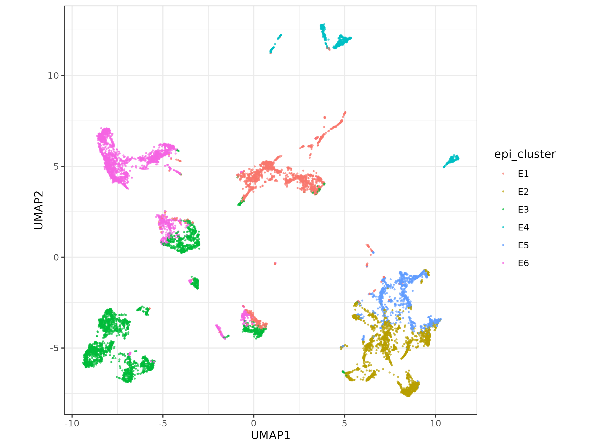
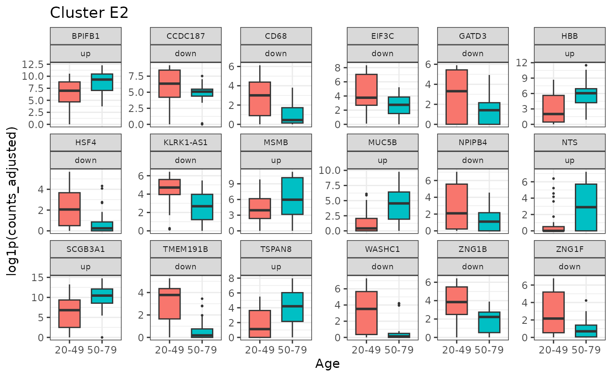
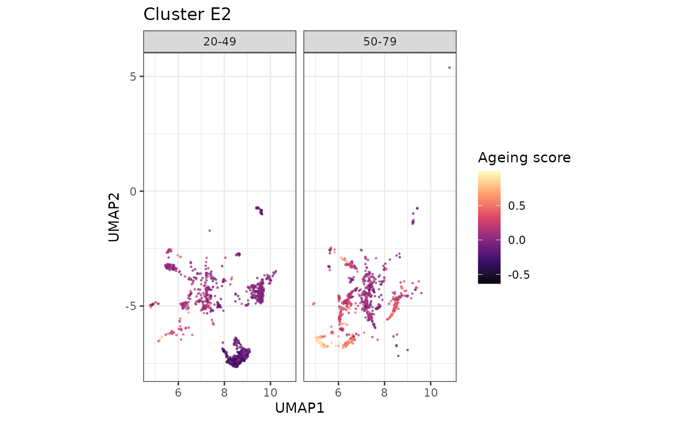
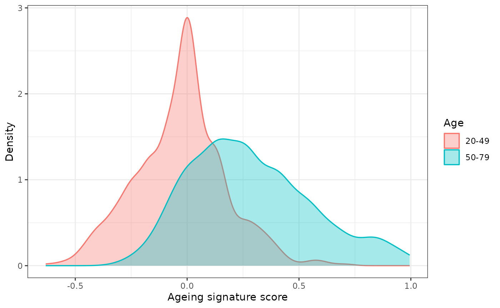

Continue from Compositional analysis. This article answers the question: does ageing change transcription in lung epithelial cells?
Epithelial cells are integrated with Harmony, clustered into six populations, and aggregated to sample-level pseudobulk profiles. DESeq2, through tidybulk, tests one epithelial cluster for age-associated genes, adjusting for study and cell count (Love, Huber, and Anders 2014). Those genes form an epithelial ageing signature, which is scored on individual cells with singscore to show where the transcriptional change sits across the epithelium (Foroutan et al. 2018).
The reusable script for everything you have run is installed with the package:
file.edit(system.file(
"scripts", "workshop_respiratory_ageing.R",
package = "cellNexusWorkshop"
))Split the broad epithelial label
epithelial is one broad label. Ciliated, secretory,
basal, and alveolar cells all sit inside it, so a single expression
average mixes cell types that are not the same. The test therefore
splits those cells into smaller clusters, and uses marker genes to
decide whether that split is a real set of smaller cell types. A cluster
is identified by the genes that mark it.
Integrate epithelial cells and define six clusters
Epithelial cells are integrated with Harmony and cut into six
clusters. The age test uses the cluster that can support the design.
This example uses 12,000 epithelial cells. Harmony here is for
clustering and the UMAP. The counts still carry study effects, and the
model below still includes dataset_id.
epi_cell_cap <- 12000L
min_cells_pb <- 10L
set.seed(42)
epi_cells <- obs_lung |>
dplyr::filter(cell_type_unified_ensemble == "epithelial")
epi_cells <- dplyr::slice_sample(
epi_cells,
n = min(epi_cell_cap, nrow(epi_cells))
)
sce_epi <- epi_cells |>
get_single_cell_experiment(assays = "counts") |>
logNormCounts()
hvgs <- sce_epi |>
modelGeneVar() |>
getTopHVGs(n = 2000)
sce_epi <- sce_epi |>
runPCA(ncomponents = 30, subset_row = hvgs) |>
RunHarmony(
group.by.vars = "dataset_id",
dims.use = 1:30,
verbose = FALSE,
reduction.save = "HARMONY"
) |>
runUMAP(dimred = "HARMONY", n_neighbors = 15)
sce_epi$epi_cluster <- factor(paste0(
"E",
clusterCells(
sce_epi,
use.dimred = "HARMONY",
BLUSPARAM = KmeansParam(centers = 6L)
)
))
# base::saveRDS(sce_epi, "./inst/extdata/sce_epi.rds", compress = "xz")
sce_epi |>
ggplot(aes(UMAP1, UMAP2, colour = epi_cluster)) +
geom_point(size = 0.3, alpha = 0.6) +
coord_equal() +
theme_bw()
Aggregate sample-by-cluster pseudobulk
Each later test treats the sample as the replicate.
aggregateAcrossCells.se() sums raw counts within each
sample and cluster. The column ncells is the number of
cells that entered each pseudobulk. Profiles with fewer than 10 cells
are dropped. log_cell_count is a scaled depth covariate so
profiles built from different numbers of cells are comparable.
pb_se <- scrapper::aggregateAcrossCells.se(
sce_epi,
factors = list(
sample_id = sce_epi$sample_id,
epi_cluster = sce_epi$epi_cluster
),
counts.name = "ncells"
)
SummarizedExperiment::assayNames(pb_se)[
SummarizedExperiment::assayNames(pb_se) == "sums"
] <- "counts"
pb_se <- pb_se |>
dplyr::filter(ncells >= min_cells_pb) |>
dplyr::mutate(log_cell_count = as.numeric(scale(log1p(ncells))))
pb_seTest one cluster for age-associated genes
This section asks which genes change expression with age inside one epithelial population.
Choose a cluster that can support the age term
k-means labels change with the seed and the cell cap, so the cluster
for the age model is chosen from a screen. A cluster qualifies when both
age classes have enough cells and samples, neither class is a small
fraction of the cluster, at least two studies contribute both age
classes, and the design matrix has full rank. Full rank means age can be
separated from study: if every study in a cluster supplies only one age
class, the age coefficient cannot be separated from
dataset_id. Eligible clusters are sorted by how many
studies span both ages, then by the number of pseudobulk profiles. The
first row is the cluster that is tested. The thresholds here are 150
cells and 5 samples in each class. If the screen has no eligible row,
lower a threshold and rebuild it.
de_design <- ~ age_binary + log_cell_count + dataset_id
min_cells_per_class <- 150L
min_samples_per_class <- 5L
min_cell_fraction <- 0.25
min_datasets_spanning_age <- 2L
epi_cluster_screen <- as.data.frame(SummarizedExperiment::colData(pb_se)) |>
dplyr::mutate(
epi_cluster = as.character(epi_cluster),
is_old = as.logical(age_binary)
) |>
dplyr::summarise(
n_pseudobulk = dplyr::n(),
n_cells = sum(ncells),
n_cells_young = sum(ncells[!is_old]),
n_cells_old = sum(ncells[is_old]),
n_samples_young = dplyr::n_distinct(sample_id[!is_old]),
n_samples_old = dplyr::n_distinct(sample_id[is_old]),
n_datasets = dplyr::n_distinct(dataset_id),
n_datasets_spanning_age = sum(
tapply(is_old, factor(as.character(dataset_id)), dplyr::n_distinct) == 2L,
na.rm = TRUE
),
.by = epi_cluster
)
epi_cluster_screen$full_rank <- vapply(
epi_cluster_screen$epi_cluster,
function(cl) {
se <- pb_se[, pb_se$epi_cluster == cl]
se <- se[, Matrix::colSums(SummarizedExperiment::assay(se, "counts")) > 0]
cd <- droplevels(as.data.frame(SummarizedExperiment::colData(se)))
mm <- try(stats::model.matrix(de_design, data = cd), silent = TRUE)
!inherits(mm, "try-error") && qr(mm)$rank == ncol(mm)
},
logical(1)
)
epi_cluster_screen <- epi_cluster_screen |>
dplyr::mutate(
frac_young = n_cells_young / pmax(n_cells, 1),
frac_old = n_cells_old / pmax(n_cells, 1),
eligible =
n_cells_young >= min_cells_per_class &
n_cells_old >= min_cells_per_class &
n_samples_young >= min_samples_per_class &
n_samples_old >= min_samples_per_class &
frac_young >= min_cell_fraction &
frac_old >= min_cell_fraction &
n_datasets_spanning_age >= min_datasets_spanning_age &
full_rank
) |>
dplyr::arrange(
dplyr::desc(eligible),
dplyr::desc(n_datasets_spanning_age),
dplyr::desc(n_pseudobulk),
epi_cluster
)
if (!any(epi_cluster_screen$eligible)) {
stop(
"No epithelial cluster can support this design. ",
"Clusters are either too small, too unbalanced, or their studies each ",
"supply a single age class."
)
}
epi_cluster_de_top <- epi_cluster_screen$epi_cluster[[1]]
epi_cluster_screen## epi_cluster n_pseudobulk n_cells n_cells_young n_cells_old n_samples_young
## 1 E2 59 1882 1054 828 31
## n_samples_old n_datasets n_datasets_spanning_age full_rank frac_young
## 1 28 5 3 TRUE 0.5600425
## frac_old eligible
## 1 0.4399575 TRUEExercise 7. From
epi_cluster_screen, which cluster was chosen? How many studies in that cluster contribute both age classes (n_datasets_spanning_age)? Quote the screen table with the result. The label alone is not reproducible.
Solution
epi_cluster_de_top
epi_cluster_screenThe chosen row is the first row of the screen after eligible clusters
are sorted by n_datasets_spanning_age, then by the number
of pseudobulk profiles. Quote n_datasets_spanning_age for
that row. A value of 1 means the age term rests on a single study.
Test old against young with DESeq2
The contrast is old versus young: positive log fold changes are
higher in donors over 50. DESeq2 tests against a log2 fold change of 1,
so the p-value asks whether the change exceeds a doubling. Say that when
you report the p-values. sfType = "poscounts" estimates
size factors on sparse pseudobulk, where the default median-of-ratios
estimator can find no gene detected in every profile.
Genes are kept when they reach 5 counts per million in at least half of the profiles, evaluated with respect to age, so a gene expressed in one age class survives.
pb_se <- pb_se[, pb_se$epi_cluster == epi_cluster_de_top]
pb_se <- pb_se[, Matrix::colSums(assay(pb_se, "counts")) > 0]
assay(pb_se, "counts") <- round(assay(pb_se, "counts"))
pb_se$sizeFactor <- NULL
pb_se$age_binary <- factor(
ifelse(pb_se$age_binary, "old", "young"),
levels = c("young", "old")
)
pb_se <- pb_se |>
keep_abundant(
formula_design = ~ age_binary,
minimum_proportion = 0.5,
minimum_count_per_million = 5
) |>
test_differential_expression(
de_design,
contrasts = list(c("age_binary", "old", "young")),
method = "DESeq2",
omit_contrast_in_colnames = TRUE,
test_above_log2_fold_change = 1,
sfType = "poscounts"
) |>
adjust_abundance(
.factor_unwanted = c(log_cell_count, dataset_id),
.factor_of_interest = age_binary,
method = "limma_remove_batch_effect"
)## Coefficients not estimable: dataset_ide04daea4_4412_45b5_989e_76a9be070a89Plot the genes in the ageing signature
The signature uses a nominal p-value cutoff, capped at 25 genes in
each direction. It is a gene set for scoring. A claim about an
individual gene needs the false-discovery column as well. Report both.
The boxplots show those genes after adjust_abundance() has
removed study and cell-count effects.
de_results <- rowData(pb_se) |>
tibble::as_tibble(rownames = ".feature") |>
dplyr::mutate(
gene_symbol = AnnotationDbi::mapIds(
org.Hs.eg.db,
keys = stringr::str_replace(.feature, "\\.[0-9]+$", ""),
keytype = "ENSEMBL",
column = "SYMBOL",
multiVals = "first"
) |>
unname() |>
dplyr::coalesce(.feature)
)
signature_up <- de_results |>
dplyr::filter(pvalue < 0.05, log2FoldChange > 0) |>
dplyr::slice_min(pvalue, n = 25)
signature_down <- de_results |>
dplyr::filter(pvalue < 0.05, log2FoldChange < 0) |>
dplyr::slice_min(pvalue, n = 25)
signature_up## # A tibble: 7 × 9
## .feature .abundant baseMean log2FoldChange lfcSE stat pvalue padj
## <chr> <lgl> <dbl> <dbl> <dbl> <dbl> <dbl> <dbl>
## 1 ENSG00000263639 TRUE 196. 4.43 0.777 5.70 5.18e-6 0.0555
## 2 ENSG00000127324 TRUE 5.62 3.12 0.541 5.76 4.52e-5 0.242
## 3 ENSG00000133636 TRUE 34.9 5.32 1.18 4.52 1.21e-4 0.430
## 4 ENSG00000117983 TRUE 164. 3.89 0.866 4.49 4.24e-4 1
## 5 ENSG00000244734 TRUE 39.4 3.10 0.720 4.30 1.79e-3 1
## 6 ENSG00000125999 TRUE 459. 2.02 0.561 3.60 3.44e-2 1
## 7 ENSG00000161055 TRUE 850. 2.25 0.728 3.09 4.33e-2 1
## # ℹ 1 more variable: gene_symbol <chr>
marker_genes <- dplyr::bind_rows(
dplyr::mutate(signature_up, direction = "up"),
dplyr::mutate(signature_down, direction = "down")
) |>
dplyr::select(.feature, gene_symbol, direction)
marker_plot_df <- pb_se[marker_genes$.feature, ] |>
as_tibble() |>
dplyr::left_join(marker_genes, by = ".feature")
ggplot(marker_plot_df, aes(age_bin, log1p(counts_adjusted), fill = age_bin)) +
geom_boxplot(outlier.size = 0.4, width = 0.65) +
facet_wrap(~ gene_symbol + direction, scales = "free_y", ncol = 6) +
theme_bw() +
theme(legend.position = "none", strip.text = element_text(size = 7)) +
labs(
x = "Age",
y = "log1p(counts_adjusted)",
title = paste("Cluster", epi_cluster_de_top)
)
Exercise 8. In
de_contrast, which age class is the numerator? Check one gene insignature_upagainst its boxplot and confirm the direction matches.
Solution
c("age_binary", "old", "young") tests old against young.
Positive log2FoldChange means higher abundance in donors
over 50. The boxplot for a gene in signature_up should sit
higher in the 50-79 bin. If it sits lower, the factor
levels and the contrast disagree.
Score the ageing signature on single cells
singscore scores each cell by the average rank of the signature genes (Foroutan et al. 2018). The score asks where the age-associated transcriptional change sits inside the chosen cluster. Zero is a cell with no net signature, and a depleted cell stays below zero.
library(singscore)
sce <- sce_epi |>
dplyr::filter(epi_cluster == epi_cluster_de_top)
rank_mat <- rankGenes(as.matrix(assay(sce, "logcounts")))
sce$aging_signature_score <- simpleScore(
rank_mat,
upSet = signature_up$.feature,
# A threshold test can leave one direction empty; simpleScore needs NULL,
# not a zero-length vector, and then scores on the up set alone.
downSet = if (nrow(signature_down) > 0) signature_down$.feature else NULL
)$TotalScore
sce |>
ggplot(aes(UMAP1, UMAP2, colour = aging_signature_score)) +
geom_point(size = 0.3, alpha = 0.6) +
scale_colour_viridis_c(option = "magma") +
facet_wrap(~ age_bin, ncol = 2) +
coord_equal() +
theme_bw() +
labs(colour = "Ageing score", title = paste("Cluster", epi_cluster_de_top))
sce |>
ggplot(aes(aging_signature_score, fill = age_bin, colour = age_bin)) +
geom_density(alpha = 0.35, linewidth = 0.6) +
theme_bw() +
labs(x = "Ageing signature score", y = "Density", fill = "Age", colour = "Age")